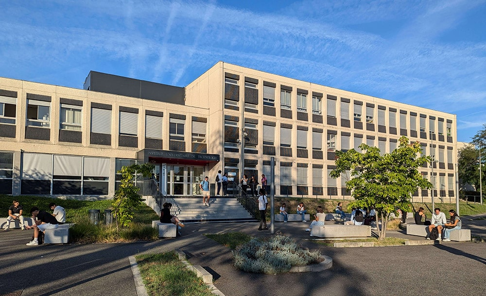

Blocs de compétences
Le Bachelor Universitaire de Technologie Informatique forme des étudiants aux bases du développement, de la gestion de données, des systèmes, du réseau, du travail en équipe et de la conduite de projet.

Le département Informatique de l'IUT de Toulouse est situé sur le campus de Rangueil. Il offre un environnement favorable aux études, avec des bâtiments universitaires, des services et des transports à proximité.